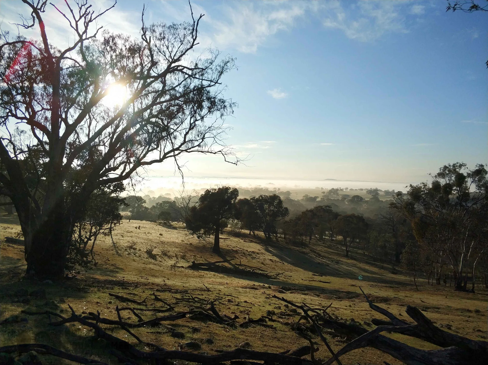
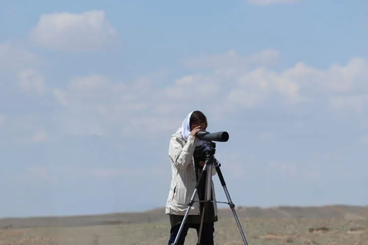
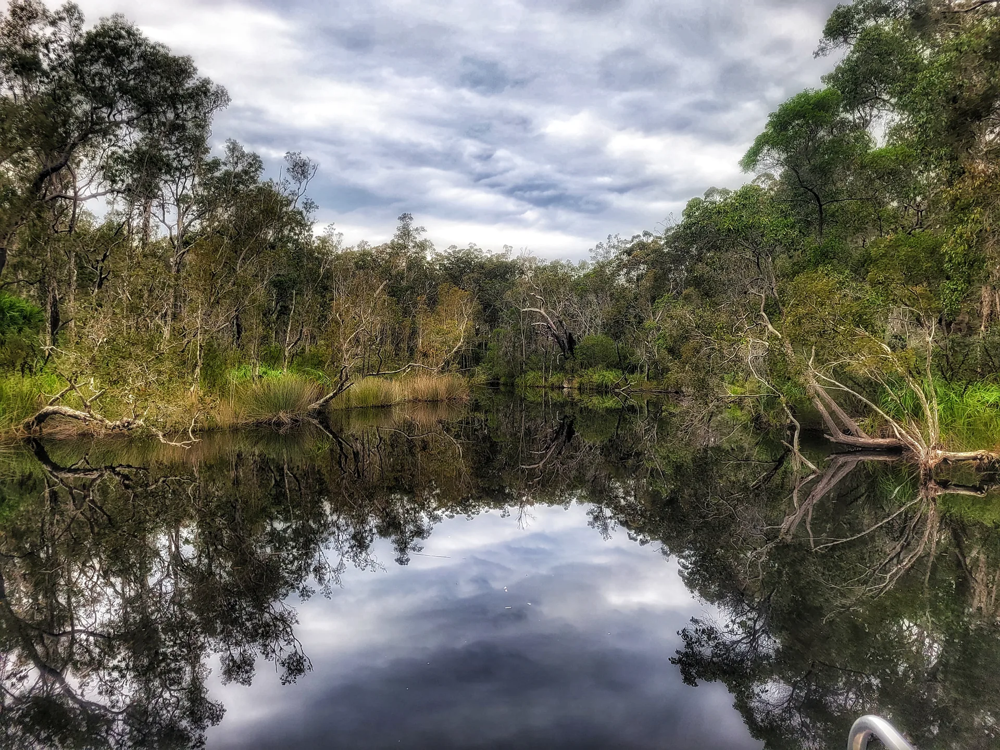

Grant and award scouting
Sure, I'll watch your grants. And your awards.
Keystone Scout is my monthly scouting service for conservation, environment and purpose-led organisations, nonprofit or for-profit, based in Australia and working wherever you are. One view across both your grant and award landscapes, and the part nobody has time for: catching what jumps between them. The award your funded project just made you a real shot at. The win that gets funders and partners reaching out to you directly.
Book my discovery call(opens in new tab)Watching for grants is a job. Watching for awards is another. Spotting how they feed each other? That's the one that never gets done.
A funded project this year is an award-worthy story next year. And an award win can do more than strengthen the next application: it gets you noticed by the people who fund this work, the philanthropists, investors and partners who start reaching out directly, with opportunities bigger than anything you'd have found on your own. Seeing all of that takes one set of eyes across both, at a desk that isn't already full. What you need isn't more chasing. It's the few that compound, pointed out before they pass.
How does one report cover both your grants and your awards? (Your part's embarrassingly small.)
- You: tell me about your organisation once, at the start... what you do, what you've achieved, and where you want to be funded and recognised.
- Me: I watch both landscapes every month, rate the grants green, amber or red for fit, map the awards you're a real contender for, and call out where one sets up the other.
- You: open one report, we talk it through on a monthly call, and you decide what's worth chasing across both.

What Keystone Scout isn't (so you know exactly what you're buying):
- Not the writing. I scout and strategise; the applications themselves are separate pieces, quoted each time, discounted because you're a Keystone Scout client.
- Not funder relationship management, and not reporting or acquittals. Different jobs, not this one.
- Not a promise you'll win. Anyone selling you that is selling something I won't.
What it is: your grants and awards watched as one, the links between them spelled out. The eyes on your pipeline, not the hands in it.

Photo: MariaWhen something's worth going after, and you want it written
When a grant or an award is worth chasing and you want it written, that's grant writing for a grant, Award Story for an award. Quoted per piece, scoped first, discounted for Keystone Scout clients. And if you'd rather hand the whole grant pipeline over one day, that's the Strategic Funding Partnership. Most people take it one opportunity at a time first.
The one I already do this for.
I already watch grants and awards together for one organisation: Tenkile Conservation Alliance, a conservation group working in Papua New Guinea. Their funded work and their recognition get read as one picture, not two separate jobs. It's how I know the integrated view holds up in practice, not just on a services page.
Before you book the call
Why not just buy Grant Scout and Award Scout separately?
You can, and you'd get both landscapes watched. What you wouldn't get is the part that only shows up when someone reads them side by side: the grant whose outcomes set you up for an award the year after, the win worth landing before your next big application, the evidence that does double duty across both. Keystone Scout is the two in one view, with the connections called out, so you run one strategy instead of two separate to-do lists.
How do grants and awards actually feed each other?
A funded project becomes the story that wins an award, and an award win gets you noticed by the people who fund the next one. Grants build the track record awards reward; awards build the credibility and the relationships that make the next grant easier to win. Read separately, you miss the timing. Keystone Scout maps both together and points out where a move on one side sets up a win on the other.
Do you write the grant and award applications too, or just find them?
Keystone Scout finds and connects; the writing is a separate step. I scout both landscapes, rate the opportunities and show you how they link, and when something's worth going after and you want it written, that's grant writing for a grant or Award Story for an award, quoted per piece and discounted because you're a Keystone Scout client. The scouting is the eyes; the writing is there when you're ready for it.
Is Keystone Scout only for charities, or can a for-profit or social enterprise use it?
A for-profit or social enterprise can use Keystone Scout. Plenty of purpose-led businesses are eligible for grants and awards, the pathways just differ from a registered charity's, and part of the job is matching you to what you're genuinely eligible for across both. If your work is conservation, environmental or purpose-led, your structure isn't the deciding factor.
Do I need to have done Grant Scout or Award Scout first?
No, you can start straight on Keystone Scout. The award landscape mapping is built into your onboarding, and the grant scouting starts from the same first conversation, so nothing needs to be bought separately first. Most people come to it either already watching one side and wanting the other, or wanting both watched together from the start.
What does Keystone Scout cost?
Keystone Scout is a monthly retainer, month to month, with the figure worked out on a quick discovery call. It costs less than buying its parts piecemeal, because the award mapping and the integration layer are built in, and the grant and award writing itself is separate and discounted when you need it. The call is the fastest way to a real number for your organisation.
A free call to work out whether watching both is worth it for you.
We'll look at where your funding and recognition sit now, whether one integrated view would help, and where you'd start. And if you only need one side watched? I'll point you to Grant Scout or award mapping and leave it there.
Book my discovery call(opens in new tab)